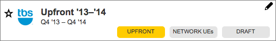
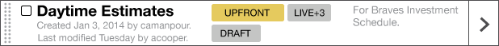
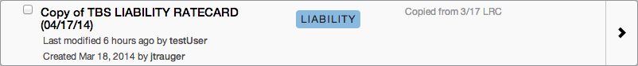
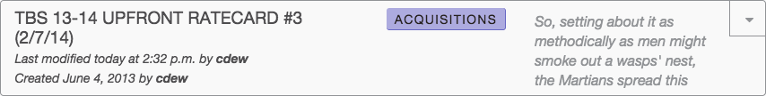
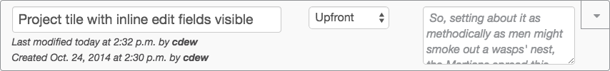
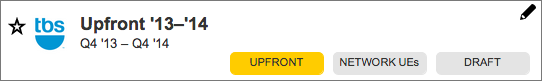
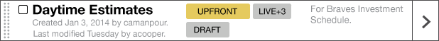
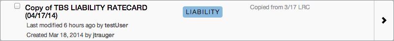
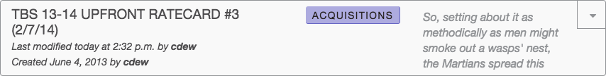
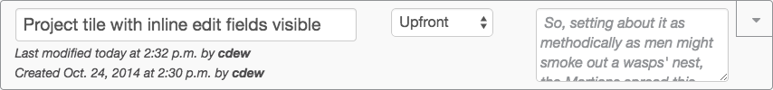

Terra
Terra is an enterprise level application used by Turner Broadcasting Systems, Inc. (TBS) to predict how well its television networks (such as CNN, TBS, TNT, Cartoon Network, etc.) are likely to do in coming years, based on past performance. One of the key functions of this application is to export rate cards, which are used to sell about $4 billion in television ad space annually.
The previous application, in addition to being outdated, created problems through an unintuitive interface, forcing a workflow that did not match actual business processes (which varied from network to network), and effectively hiding critical information. Users complained that the application was restrictive, cumbersome, and, above all, slow.
In addition to improving the overall user experience, we identified a few key goals that would help us best provide value to users and the business:
-
Increase efficiency — In the current application, users lost time not just to poor app performance, but also to workflows that were unecessarily complicated. Reducing these wastes would not only improve the UX but save the business money.
- Reduce mistakes — Several areas of the current app almost invited mistakes from a failure to surface important information, or due to a poor interface. Since getting an estimate too high or too low for any program would result in lost money for the company, we identified this as a top priority for the application.
- Increase accuracy — We felt we could help improve our users ability to create accurate predictions by creating new ways to view and understand the data.
- Allow for flexibility — The rapid pace of technology hits our business in two ways. First, our own enterprise software applications need to be regularly maintained and updated. Second, the television industry is evolving rapidly as viewing habits change. Our system needs to be future friendly not just for the sake of maintanence and upkeep, but be flexible enough to accomodate changes in the estimating process.
UX Research
Since all our users were fellow employees, I was in a unique position for frequent contact. I developed research priorities and protocols in collaboration with a small, Agile team, as well as interactive and paper prototypes to validate our ideas before getting into production. I also completed frequent usability tests on the actual application in development.
Conceptualization and Analysis
In the current app, each project is treated as if it is unrelated to every other project. Through my research, I discovered that users didn’t think of their projects in this way. In reality, users create projects as new versions of previous projects, or even ‘child’ projects of ‘parents.’ For example, a Scatter project will begin as a copy from that year’s Upfront, and older selling titles will be deleted. New programs will be added as new selling titles. This process is repeated each month when users create a Liability project.
Certain selling titles will be replicated within these projects, and users want to be able to compare all versions of a selling title. Since the current database does not recognize these relationships, this is difficult. In the early stages of development, I created conceptual illustrations to help the product team understand these relationships.
Iteration
Initially I had to work with the product team to set expectations for the iterative nature of design, allowing ample time ahead of development to test and refine design decisions. I involved the entire team in collaborative design sessions, using techniques including Design Studio, Six Thinking Hats, and structured critiques to introduce design thinking.
 









Surfacing important information
In many areas of the app, good decision-making was impeded because important information was jumbled or hidden. For example, the primary task for estimators in this application is to link previous viewing data to their estimates for future programming. In the previous application, it is almost impossible to tell what information on the bottom (previous data) is linked top the estimates in the panel above. Additionally, you cannot see the links for share calculations and viewers per viewing household (VPVH) at the same time.
{kind=link}
In the new design, linked rows are separated from unlinked rows in a separate list, and linked information is highlighted in blue. Share and VPVH links are visible at the same time. These design decisions are enhanced by the reduction of unecessary and distracting app chrome across the board.
We went through a few cycles of testing and redesign before being put into production. From validating our ideas with paper prototypes as well as usability tests with interactive prototypes, we learned:
- We needed to clarify many of the data labels.
- Users looked at the weight columns to understand which data was linked. From this, we concluded we needed to show weight values for all rows, even when the value was 0.
- Users weren’t interested in much of the data displayed in the previous app. We were able to remove a number of elements from the UI to focus on the data that really mattered.
- We learned that users also needed a quick way to bring the selected estimate line back into view if they have scrolled away.
{kind=link}
Contributions
- ux strategy
- usability testing
- contextual inquiry
- collaborative design sessions
- story grooming
- iteration planning
- MVP planning
- documenting user flows
- wireframing
- HTML/CSS
- visual design
- rapid prototyping